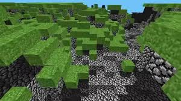
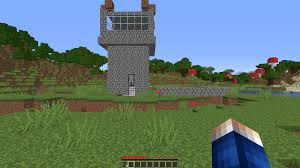
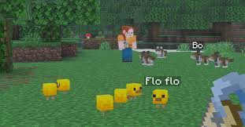

Historie Minecraftu
2009:Cave Game a Notch
Všechno to začalo v květnu roku 2009, kdy švédský programátor Markus Persson, známý pod přezdívkou Notch, vytvořil první verzi hry za pouhých 6 dní. Původně se projekt jmenoval „Cave Game“ a obsahoval pouze dva typy kostek – trávu a cobblestone. Notch se inspiroval hrami jako Infiniminer nebo Dwarf Fortress. Hra si okamžitě získala komunitu věrných hráčů, kteří v tehdejším bezplatném režimu Classic stavěli neuvěřitelné stavby.

2011: Oficiální vydání a šílenství
Po fázích Alpha a Beta byla 18. listopadu 2011 na akci MineCon v Las Vegas oficiálně vydána plná verze Minecraftu 1.0. Do hry přibyl bájný drak Ender Dragon a dimenze End, což hře dalo jasný konec. Minecraft se stal obrovským hitem na YouTube, kde tisíce tvůrců natáčely své „Let's Playe“. Hra postupně vyšla na Xbox, PlayStation a mobilní telefony, čímž zasáhla miliony dětí i dospělých po celém světě.

2014–Současnost: Pod křídly Microsoftu
V roce 2014 přišel šok – Notch prodal celé své studio Mojang technologickému gigantovi Microsoft za neuvěřitelné 2,5 miliardy dolarů. Mnozí se báli, že to bude konec hry, ale opak byl pravdou. Microsoft začal vydávat obří tematické aktualizace (Update), které kompletně předělaly oceány, jeskyně, podsvětí Nether nebo přidaly nové vesničany. Dnes je Minecraft s více než 300 miliony prodaných kopií nejprodávanější hrou všech dob.
